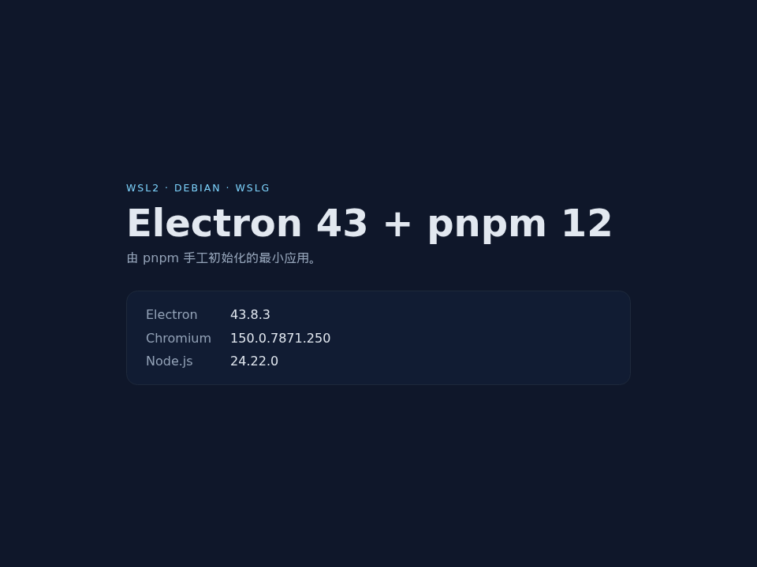
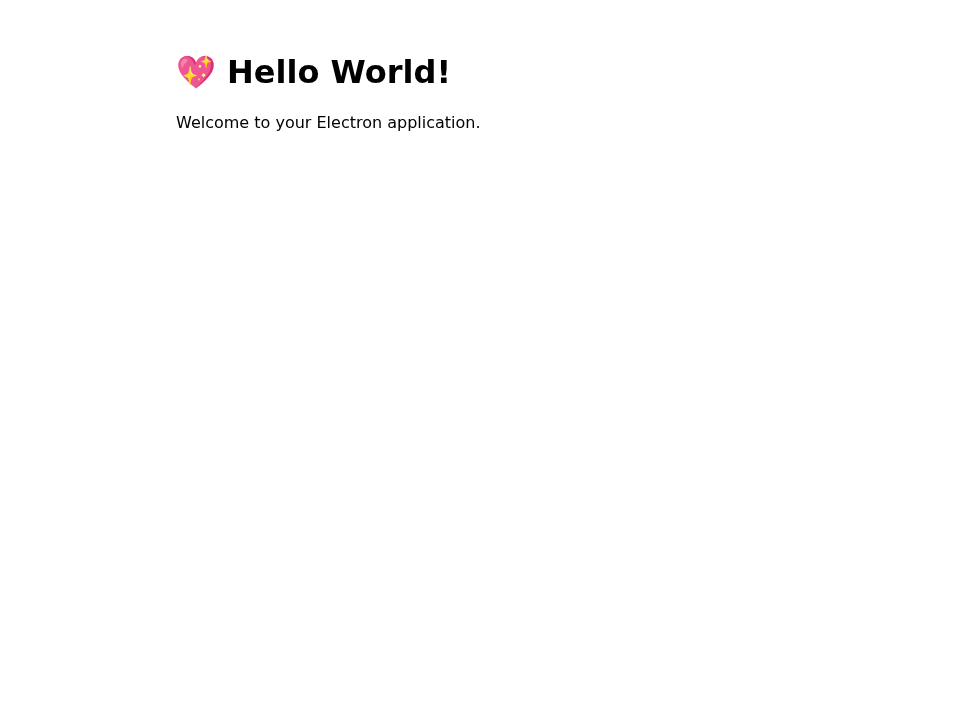
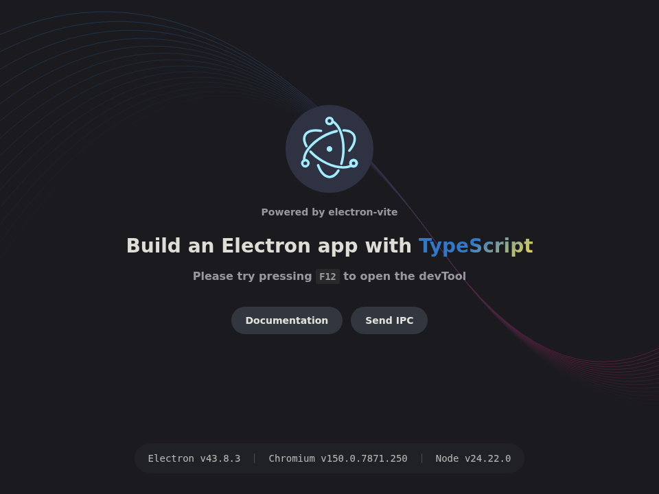

Electron 43 × pnpm 12 × WSL2 Debian 初始化教程
这份教程围绕三个可独立运行的沙箱展开：手工初始化、Electron Forge、electron-vite。示例项目根目录统一命名为 project，你可以替换成自己的项目名。三个沙箱各自拥有独立的 package.json、pnpm-lock.yaml、node_modules 和 pnpm-workspace.yaml，可以单独复制、安装和运行。
文中命令、版本号、报错和截图来自 WSL2 / Debian / WSLg 的实际运行。三张效果图分别对应三条路径启动后的窗口。第二篇 01-electron-vscode.md 以 Code OSS / VS Code 为样本，继续整理工业级 Electron 项目的目录与文档索引。
0. 版本基线与项目结构
| 组件 | 版本 | 说明 |
|---|---|---|
| Electron | 43.8.3 | 对齐 Code OSS / VS Code 1.145.0 使用的 Electron 43.x 系列 |
| Chromium | 150.0.7871.250 | Electron 43.8.3 内置运行时 |
| Node.js（Electron 内置） | 24.22.0 | 通过 process.versions.node 验证 |
| Node.js（主机工具链） | 22.23.2 | 当前环境；Electron 43 的 npm 包要求 >=22.12.0 |
| pnpm | 12.9.1 | 项目通过 Corepack 固定 |
| Electron Forge | 8.0.1 | 02-forge 沙箱 |
| electron-vite | 6.0.0 | 03-electron-vite 沙箱 |
| Vite | 8.3.5 | Forge 与 electron-vite 共用 |
| 操作系统 | WSL2 + Debian | GUI 由 WSLg 提供 |
Electron 与 pnpm 都使用精确版本。Electron 固定为 43.8.3，pnpm 固定为 12.9.1，锁文件负责固定完整依赖图。这样升级动作会以一次明确的提交出现，团队和 CI 看到的是同一组版本。
先确认工具链：
当 pnpm --version 显示其他版本时，先校正 Corepack 的默认版本：
项目内的 packageManager 字段会优先于全局默认值。进入每个沙箱后，pnpm --version 都应显示 12.9.1。
项目结构
教程把示例项目根目录叫作 project。三条路径彼此独立，最终可以只保留一条，也可以并排保留：
project/README.md 记录版本矩阵、环境前提与启动方式；每个沙箱内部都有自己的 package.json、pnpm-lock.yaml、node_modules 和 pnpm-workspace.yaml。project/ 本身不需要父级 workspace，三个沙箱的安装和运行互不影响。下面的命令都从这个根目录开始；如果你的项目名不同，替换 project 即可。
1. pnpm 12 的项目配置
1.1 pnpm init 生成的内容
在空目录执行：
实际生成的 package.json 包含：
{
"name": "01-manual",
"version": "1.0.0",
"main": "index.js",
"scripts": {
"test": "echo \"Error: no test specified\" && exit 1"
},
"devEngines": {
"packageManager": {
"name": "pnpm",
"version": "12.9.1",
"onFail": "download"
}
},
"packageManager": "pnpm@12.9.1",
"type": "module"
}
这三个自动字段都保留：
devEngines.packageManager让 Corepack 在版本不符时按策略处理；onFail: "download"会在需要时下载指定版本。packageManager是项目的包管理器声明，Corepack 用它选择 pnpm。type: "module"让主进程的.js文件按 ESM 解析。主进程使用import，preload 使用.cjs后缀；沙盒化的 preload 以 CommonJS 执行，这个组合在 Electron 43 下工作正常。
devEngines.packageManager 使用对象形式。字符串形式（例如 Forge 模板曾写入的 "pnpm@11.21.0"）会让 Corepack 提示该值被忽略。
1.2 配置写在 pnpm-workspace.yaml
pnpm 12 把项目级设置放在 pnpm-workspace.yaml，.npmrc 只保留认证与 registry 相关内容。下面的配置是三个沙箱的共同起点：
allowBuilds 是构建脚本的放行映射。pnpm 12 遇到未放行的依赖脚本会直接失败：
Error: ERR_PNPM_IGNORED_BUILDS
× adding a new package
╰─▶ Ignored build scripts: esbuild@0.28.2
help: Run "pnpm approve-builds" to pick which dependencies should be allowed
to run scripts.
把包名加入映射即可：
pnpm approve-builds 会以交互方式选择包，并把结果写入同一个映射。旧写法 onlyBuiltDependencies 在本地测试中没有放行构建脚本；pnpm 12 使用 allowBuilds。
.npmrc 中的 node-linker 同样不再生效。实测配置：
安装后 pnpm config get node-linker 返回 undefined，node_modules/.pnpm 仍然存在，布局保持 isolated。把同样的意图写进 pnpm-workspace.yaml：
安装后 node_modules 顶层出现真实目录：
isolated 布局则是符号链接加 .pnpm 包目录：
Forge 与 electron-builder 的打包器直接遍历 node_modules，hoisted 布局提供了它们需要的平铺结构。手工路径不需要打包器，使用默认 isolated 布局即可。
1.3 固定版本与锁文件
安装 Electron 时使用 -E（--save-exact）：
package.json 写入 "electron": "43.8.3"，pnpm-lock.yaml 锁定 Electron 及其传递依赖。CI 使用：
三个沙箱都通过了 frozen lockfile 安装。锁文件需要提交到版本库，升级依赖时由 pnpm add / pnpm update 更新，再一起提交。
1.4 用 pnpm 替代 npm
pnpm 接管安装、脚本和发布后，项目里仍然可能出现 npm 调用。electron-vite 脚手架的 typecheck 与 build 脚本原本写成：
"typecheck": "npm run typecheck:node && npm run typecheck:web",
"build": "npm run typecheck && electron-vite build"
本教程把它们改成：
"typecheck": "pnpm run typecheck:node && pnpm run typecheck:web",
"build": "pnpm run typecheck && electron-vite build"
排查时搜索 npm run、npm install、package-lock.json 即可。README、CI 配置和脚手架模板也一并检查，避免在 pnpm 项目里混入第二套安装路径。
2. WSL2 的 GUI 与沙盒
2.1 WSLg 已经提供显示
Windows 11 和 Windows 10 21H2 以上版本自带 WSLg。Debian 内的环境变量通常已经就绪：
printf 'DISPLAY=%s\nWAYLAND_DISPLAY=%s\n' "$DISPLAY" "$WAYLAND_DISPLAY"
# DISPLAY=:0
# WAYLAND_DISPLAY=wayland-0
ls /mnt/wslg
不需要手动启动 X server，也不需要设置 DISPLAY=:0。WSLg 的 X11 与 Wayland socket 由 WSL 管理。
2.2 root 与 Chromium 沙盒
Electron 以 root 运行时，Chromium 会拒绝启动：
FATAL:electron/shell/app/electron_main_delegate.cc:224] Running as root without --no-sandbox is not supported.
当前环境是 root，因此三个沙箱分别使用对应的关闭方式：
| 路径 | 启动方式 | 关闭参数 |
|---|---|---|
| 手工 | pnpm start |
electron . --no-sandbox ... |
| Forge | pnpm start |
脚本内 ELECTRON_DISABLE_SANDBOX=1 |
| electron-vite | pnpm dev / pnpm start |
electron-vite ... --noSandbox |
这些参数只在 root 测试环境使用。普通用户启用非特权用户命名空间后，可以恢复 Chromium 的默认沙盒。检查方式：
现代 Debian 内核使用 user.max_user_namespaces；较旧的内核才有 kernel.unprivileged_userns_clone。值为 0 时，可以用 sysctl 临时开启：
需要持久化时写入 /etc/sysctl.d/。这项设置解决的是普通用户的沙盒能力；root 启动仍然需要关闭沙盒参数。
2.3 libGLESv2.so: Permission denied 的根因与修复
第一次启动时出现：
ERROR:ui/ozone/common/egl_util.cc:59] Failed to load GLES library:
project/01-manual/node_modules/.pnpm/electron@43.8.3/node_modules/electron/dist/libGLESv2.so:
cannot open shared object file: Permission denied
文件本身的权限是 755，file 与 ldd 都能正常读取，Python 的 ctypes.CDLL 也能加载。问题出在 GPU 进程的权限上下文：
ls -ld "$HOME"
# drwx------ ... $HOME
ps -eo pid,args | grep -- '--type=gpu-process'
grep -E 'CapEff|NoNewPrivs' /proc/<gpu-pid>/status
# CapEff: 0000000000000000
# NoNewPrivs: 1
GPU 进程的 uid 仍是 0，但 capabilities 被清空。它要穿过 $HOME（0700，属主当前用户）去读取 Electron 的共享库，缺少 CAP_DAC_OVERRIDE 时就会得到 EACCES。同一路径下的其他文件和 Python 进程以完整 root 权限运行，所以单独测试时看起来正常。
处理方式按环境选择：
- 以项目所有者身份运行 Electron，路径权限与进程身份一致。
- 把项目放到
/root下，root 自己的 home 对 root 可遍历。 - 必须在 root 下保留当前路径时，给 home 增加遍历权限：
本教程采用第 3 种方式。chmod o+x 只开放目录遍历，不开放目录读取；在单用户 WSL 开发环境里足够，也能随时用 chmod o-x "$HOME" 还原。修复后，Electron 启动日志不再出现 libGLESv2.so 的权限错误。
2.4 /dev/shm 与 GPU 警告
检查共享内存：
共享内存充足时可以省略 --disable-dev-shm-usage；容器或小内存 WSL 实例中该值偏小时再加。手工沙箱保留了该参数，Forge 与 electron-vite 没有添加。
WSLg 的 GPU 能力有限，日志里可能出现：
ContextResult::kFatalFailure: WebGL1 blocklisted
dri3 extension not supported
InitializeSandbox() called with multiple threads in process gpu-process
这些是 WSLg 图形栈的警告，2D 界面仍能显示。应用依赖 WebGL 时，需要单独验证软件渲染路径；纯 2D 应用可以在主进程调用 app.disableHardwareAcceleration() 减少 GPU 初始化日志，需要 WebGL 的应用保留默认硬件加速。
3. 路径 A：手工初始化
沙箱位置：project/01-manual。
3.1 初始化命令
保留 pnpm init 自动写入的 devEngines、packageManager 和 type，然后用 pnpm pkg set 补齐项目字段：
pnpm pkg set name="project-manual"
pnpm pkg set description="Minimal Electron 43 app initialized by hand on WSL2"
pnpm pkg set private=true --json
pnpm pkg set main="src/main.js"
pnpm pkg set scripts.start="electron . --no-sandbox --disable-dev-shm-usage"
pnpm pkg delete scripts.test
pnpm pkg set engines.node=">=22.12.0"
pnpm pkg set engines.pnpm=">=12.9.0"
private 使用 --json，写入的是布尔值 true；不加 --json 会写成字符串 "true"。
安装前先写 pnpm-workspace.yaml：
再安装精确版本的 Electron：
实际输出：
补齐 Node 版本与忽略文件：
README.md 可以记录版本矩阵与启动命令，不是运行依赖；需要与下面的目录树对齐时，再补一份简短的说明即可。
此时 node_modules/.pnpm/electron@43.8.3/node_modules/electron/dist 还不存在。Electron 43 的 npm 包把二进制下载放在首次执行 electron 时，pnpm start 会打印 Downloading Electron binary... 并完成解压。这条路径可以省略 allowBuilds: electron；保留它是为了后续加入需要构建脚本的依赖时，pnpm 12 有明确的放行策略。
3.2 主进程
src/main.js：
import { app, BrowserWindow } from 'electron'
import { fileURLToPath } from 'node:url'
import { dirname, join } from 'node:path'
const __dirname = dirname(fileURLToPath(import.meta.url))
function createWindow() {
const win = new BrowserWindow({
width: 960,
height: 720,
title: 'Electron 43 + pnpm 12',
webPreferences: {
preload: join(__dirname, 'preload.cjs'),
contextIsolation: true,
sandbox: true
}
})
win.loadFile(join(__dirname, 'renderer', 'index.html'))
}
app.whenReady().then(() => {
createWindow()
app.on('activate', () => {
if (BrowserWindow.getAllWindows().length === 0) createWindow()
})
})
app.on('window-all-closed', () => {
if (process.platform !== 'darwin') app.quit()
})
ESM 主进程没有 __dirname，用 fileURLToPath(import.meta.url) 重建。preload 使用 preload.cjs；沙盒化 preload 以 CommonJS 运行，.cjs 后缀让 Node 按 CJS 解析。
3.3 preload 与渲染页面
src/preload.cjs：
const { contextBridge } = require('electron')
contextBridge.exposeInMainWorld('versions', {
electron: process.versions.electron,
chrome: process.versions.chrome,
node: process.versions.node
})
src/renderer/index.html 通过 CSP 限制脚本与样式来源：
<!doctype html>
<html lang="zh-CN">
<head>
<meta charset="UTF-8" />
<meta
http-equiv="Content-Security-Policy"
content="default-src 'self'; style-src 'self'; script-src 'self'"
/>
<title>Electron 43 + pnpm 12</title>
<link rel="stylesheet" href="./style.css" />
</head>
<body>
<main>
<p class="eyebrow">WSL2 · Debian · WSLg</p>
<h1>Electron 43 + pnpm 12</h1>
<p class="lead">由 pnpm 手工初始化的最小应用。</p>
<dl id="versions"></dl>
</main>
<script src="./renderer.js"></script>
</body>
</html>
src/renderer/renderer.js 读取 window.versions 并写入页面：
const exposedVersions = window.versions ?? {}
const rows = [
['Electron', exposedVersions.electron],
['Chromium', exposedVersions.chrome],
['Node.js', exposedVersions.node]
]
const list = document.querySelector('#versions')
for (const [label, value] of rows) {
const dt = document.createElement('dt')
dt.textContent = label
const dd = document.createElement('dd')
dd.textContent = value ?? 'unavailable'
list.append(dt, dd)
}
这里不要把局部变量命名为 versions。preload 通过 contextBridge 暴露的 window.versions 是一个全局属性，渲染脚本里再写 const versions 会抛出 Identifier 'versions' has already been declared。换一个局部变量名即可。
src/renderer/style.css：
:root {
color-scheme: dark;
font-family: ui-sans-serif, system-ui, -apple-system, "Segoe UI", sans-serif;
background: #0f172a;
color: #e2e8f0;
}
body {
margin: 0;
min-height: 100vh;
display: grid;
place-items: center;
}
main {
width: min(640px, 82vw);
}
.eyebrow {
margin: 0 0 0.75rem;
color: #7dd3fc;
font-size: 0.78rem;
letter-spacing: 0.16em;
text-transform: uppercase;
}
h1 {
margin: 0 0 0.5rem;
font-size: clamp(2rem, 5vw, 3.4rem);
line-height: 1.05;
}
.lead {
margin: 0 0 2rem;
color: #94a3b8;
}
dl {
display: grid;
grid-template-columns: max-content 1fr;
gap: 0.65rem 1.5rem;
margin: 0;
padding: 1.25rem 1.5rem;
border: 1px solid #1e293b;
border-radius: 0.9rem;
background: #111c33;
}
dt {
color: #94a3b8;
}
dd {
margin: 0;
font-variant-numeric: tabular-nums;
}
contextIsolation: true 与 sandbox: true 让渲染进程只能通过 preload 暴露的对象读取运行时版本。
3.4 启动与验证
实际输出：
随后窗口保持打开，终端没有 libGLESv2.so 权限错误。通过远程调试接口检查页面和 preload：
页面返回：
{
"title": "Electron 43 + pnpm 12",
"h1": "Electron 43 + pnpm 12",
"versions": {
"electron": "43.8.3",
"chrome": "150.0.7871.250",
"node": "24.22.0"
}
}
这组值同时验证了主进程、preload 桥接和渲染进程三层。

图 1：project/01-manual 启动后的窗口，页面显示 Electron、Chromium 与 Node.js 版本。
3.5 目录树
01-manual
├── src
│ ├── renderer
│ │ ├── index.html
│ │ ├── renderer.js
│ │ └── style.css
│ ├── main.js
│ └── preload.cjs
├── .gitignore
├── .nvmrc
├── package.json
├── pnpm-lock.yaml
├── pnpm-workspace.yaml
└── README.md
3 directories, 11 files
package.json 是项目入口与脚本；pnpm-workspace.yaml 承载 pnpm 12 的构建脚本放行；pnpm-lock.yaml 固定 Electron 的解析结果；.nvmrc 固定 Node 22.23.2。src/ 下的三个区域分别对应主进程、preload 和渲染进程。
4. 路径 B：Electron Forge
沙箱位置：project/02-forge。
4.1 脚手架命令
Forge 8 把模板拆成了 --template 与 --typescript 两个选项。vite-typescript 这个旧别名已经不存在，使用它会得到：
实际命令：
mkdir -p project/02-forge
cd project/02-forge
pnpm create electron-app@latest . \
--template vite \
--typescript \
--electron-version 43.8.3 \
--package-manager pnpm \
--skip-git
脚手架会立即执行 pnpm install，安装 Forge 8、Vite 8、TypeScript 6 和 Electron 43.8.3，并生成 pnpm-workspace.yaml：
electron-winstaller 是 MakerSquirrel 的 peer 依赖；它的安装脚本需要选择 7-Zip 架构，因此在放行列表里。nodeLinker: hoisted 让顶层依赖成为真实目录，Forge 的打包器可以直接复制和遍历。
Forge 的初始化要求目标目录为空，并在生成模板后立即执行安装。模板已经把 allowBuilds 与 nodeLinker 写好，Forge 路径因此不需要像手工路径那样先手动创建 pnpm-workspace.yaml。
4.2 校正包管理器字段
Forge 8 脚手架通过 Corepack 选择了当时的 pnpm@latest（本次为 12.15.0），并写入了一个字符串形式的 devEngines.packageManager。Corepack 会提示：
把 package.json 中两个字段统一为 12.9.1 的对象形式：
{
"packageManager": "pnpm@12.9.1",
"devEngines": {
"packageManager": {
"name": "pnpm",
"version": "12.9.1",
"onFail": "download"
}
}
}
进入项目后确认：
4.3 启动
Forge 启动脚本位于 package.json：
以 root 直接运行 electron-forge start 会得到 Chromium 的 root 检查错误：
FATAL:electron/shell/app/electron_main_delegate.cc:224] Running as root without --no-sandbox is not supported.
ELECTRON_DISABLE_SANDBOX=1 让 Electron 以关闭沙盒的方式启动。普通用户可以删掉这个前缀。
实际输出包含 Forge 的构建过程：
$ ELECTRON_DISABLE_SANDBOX=1 electron-forge start
✔ Found pnpm@12.9.1
[plugin-vite] target built src/preload.ts
[plugin-vite] target built src/main.ts
需要确认渲染进程日志时，加上 ELECTRON_ENABLE_LOGGING=1：
渲染进程的 Vite 客户端连接成功，页面加载完成。日志里的 WebGL1 blocklisted 来自 WSLg 的软件渲染，不影响窗口。

图 2：project/02-forge 启动后的默认页面。
4.4 打包
本次实际完成，产物位于：
打包后的二进制同样可以启动，渲染进程会从 app.asar 中加载页面。首次打包会复制应用和依赖，耗时明显长于 pnpm start；本次产物约 317MB，验证后已清理 out/。pnpm make 在此基础上生成配置中启用的平台安装包。
4.5 目录树
02-forge
├── src
│ ├── declarations.d.ts
│ ├── index.css
│ ├── main.ts
│ ├── preload.ts
│ └── renderer.ts
├── forge.config.mts
├── .gitignore
├── index.html
├── .nvmrc
├── .oxfmtrc.json
├── .oxlintrc.json
├── package.json
├── pnpm-lock.yaml
├── pnpm-workspace.yaml
├── README.md
├── tsconfig.json
├── vite.main.config.mts
├── vite.preload.config.mts
└── vite.renderer.config.mts
2 directories, 19 files
forge.config.mts配置 Vite 插件、Squirrel/ZIP/Deb/RPM makers 和 Electron fuses。src/main.ts是主进程入口，开发时加载MAIN_WINDOW_VITE_DEV_SERVER_URL，生产时加载打包后的页面。src/preload.ts、src/renderer.ts与index.html构成渲染侧。- 三个
vite.*.config.mts分别构建 main、preload、renderer。 pnpm-workspace.yaml与pnpm-lock.yaml分别承载 pnpm 12 的项目设置和依赖锁定。
5. 路径 C：electron-vite
沙箱位置：project/03-electron-vite。
5.1 选择官方脚手架
electron-vite 官方脚手架是 @quick-start/create-electron：
mkdir -p project/03-electron-vite
cd project/03-electron-vite
pnpm create @quick-start/electron@latest . --template vanilla-ts --skip
目标目录是 . 时，脚手架仍会询问包名，输入：
--skip 跳过 updater、镜像等可选提示，也让脚手架不写 .npmrc。另一个命令 pnpm create electron-vite 指向 create-electron-vite 脚手架，它使用 vite-plugin-electron，模板中的 Electron 版本为 30；本教程采用 electron-vite 官方的 @quick-start/create-electron，构建工具为 electron-vite 6。
5.2 安装前写入 pnpm 配置
脚手架生成源码后不会自动安装。先写基础配置：
esbuild 为 Vite 生态中可能出现的构建脚本预留；nodeLinker: hoisted 供 electron-builder 在打包时遍历平铺的 node_modules。
把 Electron 固定为 43.8.3，并把包管理器固定为 12.9.1：
{
"devDependencies": {
"electron": "43.8.3"
},
"packageManager": "pnpm@12.9.1",
"devEngines": {
"packageManager": {
"name": "pnpm",
"version": "12.9.1",
"onFail": "download"
}
}
}
安装：
electron-builder 的依赖树里还有 electron-winstaller，它的安装脚本负责选择 7-Zip。首次安装会报该脚本未获批准：
Error: ERR_PNPM_IGNORED_BUILDS
× installing dependencies
╰─▶ Ignored build scripts: electron-winstaller@5.4.0
把 electron-winstaller: true 加入 allowBuilds，最终配置为：
重新执行 pnpm install，输出会包含：
node_modules/electron-winstaller install$ node ./script/select-7z-arch.js
. postinstall$ install-electron && electron-builder install-app-deps
• electron-builder version=26.18.0
• executing @electron/rebuild electronVersion=43.8.3 arch=x64
• completed installing native dependencies
Done in 626ms using pnpm v12.9.1
根 postinstall 由项目自身执行，负责下载 Electron 二进制并检查原生依赖。依赖包的构建脚本由 allowBuilds 放行。
5.3 脚本改用 pnpm
脚手架原本在 typecheck 和 build 中调用 npm run。改成 pnpm 后：
{
"scripts": {
"dev": "electron-vite dev --noSandbox",
"start": "electron-vite preview --noSandbox",
"build": "pnpm run typecheck && electron-vite build",
"typecheck": "pnpm run typecheck:node && pnpm run typecheck:web"
}
}
--noSandbox 适配 root/WSL2 环境；普通用户启用非特权用户命名空间后可以移除。electron-vite 的 dev 与 preview 都支持该参数。
5.4 开发、构建与预览
开发模式：
实际输出：
vite v8.3.5 building ssr environment for development...
out/main/index.js 1.53 kB
out/preload/index.js 0.45 kB
dev server running for the electron renderer process at:
➜ Local: http://localhost:5173/
starting electron app...
通过 --remoteDebuggingPort 检查渲染页面：
生产构建：
实际输出包含 main、preload、renderer 三个目标：
out/main/index.js
out/preload/index.js
out/renderer/index.html
out/renderer/assets/index-*.js
out/renderer/assets/index-*.css
预览：
进程保持运行；日志中的 dri3 extension not supported 与 WebGL 警告来自 WSLg 图形栈，界面正常显示。

图 3：project/03-electron-vite 启动后的默认页面。
5.5 目录树
03-electron-vite
├── build
│ ├── entitlements.mac.plist
│ ├── icon.icns
│ ├── icon.ico
│ └── icon.png
├── resources
│ └── icon.png
├── src
│ ├── main
│ │ └── index.ts
│ ├── preload
│ │ ├── index.d.ts
│ │ └── index.ts
│ └── renderer
│ ├── assets
│ │ ├── base.css
│ │ ├── electron.svg
│ │ ├── main.css
│ │ └── wavy-lines.svg
│ ├── src
│ │ └── renderer.ts
│ └── index.html
├── .vscode
│ ├── extensions.json
│ ├── launch.json
│ └── settings.json
├── .editorconfig
├── electron-builder.yml
├── electron.vite.config.ts
├── eslint.config.mjs
├── .gitignore
├── .nvmrc
├── package.json
├── pnpm-lock.yaml
├── pnpm-workspace.yaml
├── .prettierignore
├── .prettierrc.yaml
├── README.md
├── tsconfig.json
├── tsconfig.node.json
└── tsconfig.web.json
10 directories, 32 files
electron.vite.config.ts把 main、preload、renderer 分成三个构建目标。src/main/index.ts创建窗口；src/preload/index.ts通过@electron-toolkit/preload暴露桥接对象；src/renderer/是页面与资源。electron-builder.yml定义 Linux/Windows/macOS 打包目标，build/与resources/提供图标和签名资源。pnpm-workspace.yaml放行 Electron、electron-winstaller、esbuild 的脚本，并启用 hoisted 布局。
6. 三条路径的适用场景
- 手工初始化：适合理解 Electron 的最小组成、验证 pnpm 12 配置，以及写教学样例。依赖少，每一层都能看到。
- Electron Forge：适合需要官方一体化工具链、makers 和 fuses 的桌面应用。Forge 负责开发、打包和安装包生成，Vite 插件负责构建。
- electron-vite：适合以 Vite 为中心的开发流，主进程、preload、渲染进程有清晰边界，HMR 与生产构建由 electron-vite 统一调度，打包交给 electron-builder。
三个沙箱都固定 Electron 43.8.3 与 pnpm 12.9.1，切换路径时版本基线保持一致。
7. 版本信息放在哪里
项目通常把版本信息分散在几类文件中，各司其职：
| 文件 | 作用 | 示例项目 |
|---|---|---|
README.md |
人读的版本矩阵、环境前提、启动方式 | project/README.md 与各沙箱 README |
.nvmrc |
nvm / fnm / asdf 读取的 Node 版本 | 三个沙箱均为 22.23.2；需要固定整个项目时在 project/ 再加一份 |
package.json 的 engines |
Node、pnpm 的最低版本 | node >=22.12.0、pnpm >=12.9.0 |
package.json 的 packageManager |
Corepack 使用的包管理器与版本 | pnpm@12.9.1 |
package.json 的 devEngines |
包管理器版本策略 | 对象形式，onFail: "download" |
devDependencies |
Electron、Forge、electron-vite 的实际版本 | electron: "43.8.3" |
pnpm-workspace.yaml |
pnpm 12 的项目级设置 | allowBuilds、nodeLinker |
pnpm-lock.yaml |
完整依赖图的解析结果 | 提交到版本库，CI 使用 frozen 安装 |
forge.config.mts / electron-builder.yml |
打包目标、maker、asar/fuses 等 | 两个脚手架各自维护 |
.devcontainer/、Dockerfile |
可复现的容器环境 | 固定基础镜像、Node 与 pnpm |
| CI workflow | 实际执行的命令与版本矩阵 | pnpm install --frozen-lockfile、pnpm build |
.tool-versions / mise.toml |
asdf / mise 的版本声明 | 与 .nvmrc 保持同一 Node 版本 |
| 本教程正文 | 记录三条初始化路径、验证结果与截图 | 文章与 docs/assets |
Code OSS / VS Code 的 Electron 版本由 .npmrc 的 target 指定，Node 版本由 .nvmrc 固定；build/lib/electronVersion.ts 读取目标版本，build/lib/electron.ts 下载对应制品，build/checksums/electron.txt 负责校验。根 package.json 不需要声明 electron 依赖。阅读一个 VS Code 稳定版时，切到对应 tag，再看 .npmrc、.nvmrc 与 build/checksums/electron.txt，就能得到该版本的构建基线。product.json 负责品牌与发布渠道。
版本信息的使用原则：
- 机器可读的版本放在
package.json、锁文件和环境声明里；README 展示矩阵并链接到这些文件。 - 锁文件是依赖解析的唯一依据；CI 使用
pnpm install --frozen-lockfile，避免安装阶段静默升级。 - 在 CI 里显式打印版本，便于排查：
.npmrc只放认证与 registry；pnpm 12 的项目设置写在pnpm-workspace.yaml。- 版本升级与锁文件更新放在同一个提交里，README 的矩阵同步修改。
8. 验证记录
三个沙箱均已完成安装、启动和页面加载验证。目录树来自：
| 路径 | 验证命令 | 观察结果 |
|---|---|---|
| 手工 | pnpm start |
Electron 43.8.3 启动，preload 暴露 Node 24.22.0 / Chromium 150 |
| Forge | pnpm start |
Vite 构建 main/preload，渲染进程日志正常 |
| Forge | pnpm package |
生成 out/02-forge-linux-x64/02-forge，打包二进制可启动 |
| electron-vite | pnpm dev |
dev server http://localhost:5173/，Electron 页面加载 |
| electron-vite | pnpm build / pnpm start |
三目标构建完成，preview 正常启动 |
复现时先确认 pnpm --version 为 12.9.1，再进入各目录执行 pnpm install --frozen-lockfile。当前 root/WSL2 环境需要第 2 节的沙盒参数；项目文件本身不依赖 ELECTRON_RUN_AS_NODE。
Forge 的打包产物在验证后已清理，执行 pnpm package 可以重新生成。electron-vite 的 out/ 同样可以由 pnpm build 重建。
9. 常见问题
BrowserWindow 没有导出，app 是 undefined
先检查环境变量：
ELECTRON_RUN_AS_NODE=1 会让 Electron 以纯 Node 运行，此时 require('electron') 返回 npm 包里的路径字符串，ESM 也只能看到 CommonJS 包装层。取消该变量后重新启动，import { app, BrowserWindow } from 'electron' 会恢复正常。
libGLESv2.so: Permission denied
按第 2.3 节检查 home 目录权限与 GPU 进程的 CapEff。以项目所有者运行，或 chmod o+x 开放目录遍历。
Running as root without --no-sandbox
root 环境使用对应的关闭参数，或改用普通用户并启用用户命名空间。
ERR_PNPM_IGNORED_BUILDS
把报错中的包名加入 pnpm-workspace.yaml 的 allowBuilds：
然后重新执行 pnpm install。
.npmrc 里的 node-linker 没有效果
pnpm 12 从 pnpm-workspace.yaml 读取布局设置：
Corepack 切换了 pnpm 版本
检查 package.json 的 packageManager 与 devEngines.packageManager。两者都使用 12.9.1，devEngines 使用对象形式。需要恢复全局默认时执行：
Forge 启动失败但命令退出码为 0
Forge 把 Electron 的启动错误写在日志里，终端退出码不一定反映子进程状态。看到 FATAL 时直接检查 pnpm start 的完整输出，再确认沙盒参数。
WebGL blocklist、dri3 警告
WSLg 的 GPU 能力有限，2D 界面不受影响。需要 WebGL 时单独验证软件渲染；纯 2D 应用可以关闭硬件加速减少日志。
10. 速查
# 版本
node --version
pnpm --version
node -p "require('./node_modules/electron/package.json').version"
# 手工
cd project/01-manual
pnpm install --frozen-lockfile
pnpm start
# Forge
cd project/02-forge
pnpm install --frozen-lockfile
pnpm start
pnpm package
# electron-vite
cd project/03-electron-vite
pnpm install --frozen-lockfile
pnpm dev
pnpm build
pnpm start
| 配置 | 位置 | 写法 |
|---|---|---|
| 构建脚本放行 | pnpm-workspace.yaml |
allowBuilds: { electron: true } |
| 平铺依赖 | pnpm-workspace.yaml |
nodeLinker: hoisted |
| 包管理器版本 | package.json |
packageManager: "pnpm@12.9.1" |
| 版本策略 | package.json |
devEngines.packageManager 对象形式 |
| Electron 镜像 | 环境变量 | ELECTRON_MIRROR=https://npmmirror.com/mirrors/electron/ |
| root 沙盒 | 启动参数 | --no-sandbox / ELECTRON_DISABLE_SANDBOX=1 / --noSandbox |
| 共享内存 | 启动参数 | /dev/shm 偏小时使用 --disable-dev-shm-usage |
| ESM 主进程 | src/main.js |
fileURLToPath(import.meta.url) 重建 __dirname |
| 沙盒 preload | src/preload.cjs |
CommonJS 后缀，contextBridge 暴露 API |
核心顺序可以概括为：确认 Node 与 pnpm 版本，写 pnpm-workspace.yaml，安装精确版本的 Electron，按路径生成主进程与页面，启动并检查 WSLg 窗口。三张截图与各节目录树保留了每条路径的结果；下一步可以阅读 01-electron-vscode.md，看 Code OSS / VS Code 如何组织同量级的 Electron 项目。